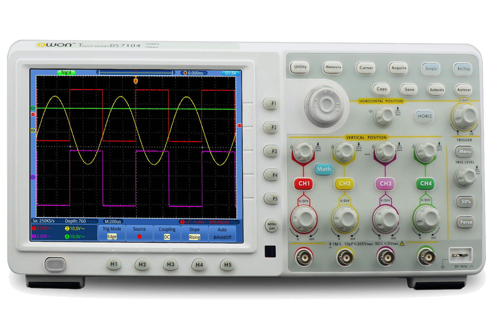
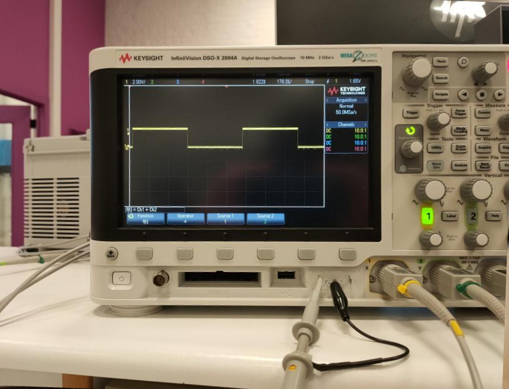
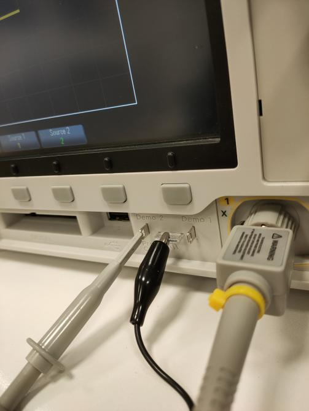

Project#4 de oscilloscoop
Bij een labo op campus moesten we een oscilloscoop gebruiken, dit was best wel spannend aangezien ik dit nog nooit had gedaan. Een oscilloscoop is een vrij impressionant apparaat, het staat namelijk vol met allerlei knopjes. Tijdens het labo moest ik met een digitale oscilloscoop werken, deze was dus vrij modern.


Technical description
- Een oscilloscoop
- Veel opzoekwerk in de cursus
- Veel hulp vrangen aan de docent
- Veel testen wat de knopjes doen
- De conlusies neerschrijven
Het project zelf
Ik vond het een zeer tof labo. Het was zeer fijn om de mensen van mijn klas nog is terug te zien na de lange tijd in afzondering. Iedereen hielp elkaar ook veel, wat goed was omdat het anders zeer moeilijk geweest ging zijn. Ik zou zeer graag nog meer labos op campus hebben aangezien deze echt super zijn.
